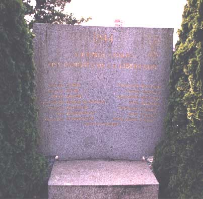

Marie CHAILLE,
le 7 juin au Bourg,
Louise AUBRIL et Juliette DAVID, le 12 juin au Suppey,
René JEANNE, le 16 juin aux Champs de Villiers,
Marcel BOUGEARD, le 17 juin à l'hôtel Bergeault,
Gastonne DUBOIS de FRESNOY, le 17 à la Raulerie,
Antonina KONDRATOUR, le 20 juin au hameau Choisy,
Léon BARBANCHON, le 20 juin rue des Juifs,
Victor LEGOUPIL, le 27 juin au Bourg,
René et Armandine RICHARD, le 29 juin à la Houenneterie,
Stéphanie VILLAIN, le 11 juillet à la Butte Guelle,
Marie-Louise RAULT, le 10 août à la Petite Raulerie,
Madeleine POULARD, le 25 juin à Littry,
Emile VILLAIN, le 13 juillet à Isigny sur Mer
De plus, Rodolfe SCHIAVI, tué à Saint-Lô a été
enterré à Villiers-Fossard.
|
 |